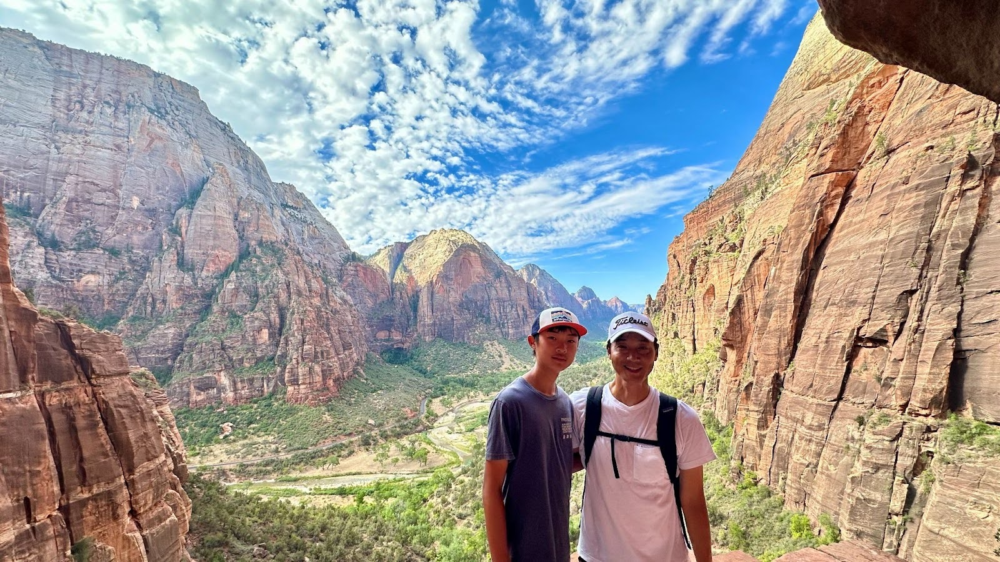
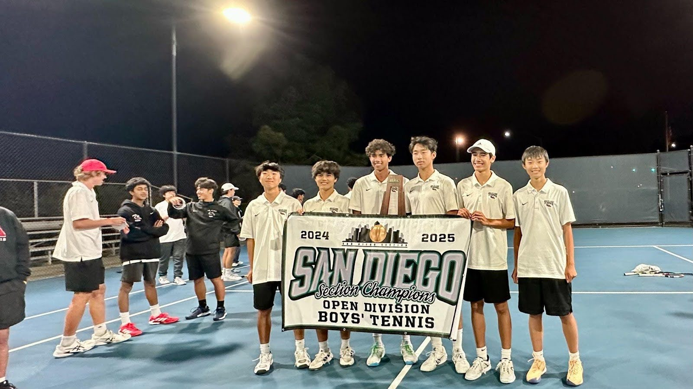

 My name is Shu Nishioka, and currently, I am a Junior at Canyon Crest Academy. I was born in New York, but I’ve moved seven times, living in places like San Francisco, Oakland, and San Diego. My parents are originally from Japan - Kobe and Kyoto specifically - so I’ve grown up influenced by both Japanese and American cultures. I would characterize myself as being kind, patient, and hardworking. I have always been passionate about sports, especially tennis, because they keep me active and challenge me to improve. Currently, my interests include data science, astronomy, and mathematics, as I enjoy discovering patterns, solving problems, and exploring complex questions about the world and universe.
As mentioned in the first paragraph, my interests include data science, astronomy, and mathematics. I’ve always been curious on how the world works, and this led me to explore these subjects more deeply. I started tutoring in math to strengthen my understanding, and help others learn ; additionally, although I struggle with communication, it has helped me improve that skill as well. I also attended data analytics summer programs at UC San Diego and UC Irvine, where I explored topics such as mathematics, probability, computer science, and data analytics. At UC San Diego, I paricpated in the FinDS Program One of these programs led to a research project I am currency working on, mentored by UCSD faculty, where I’m studying how to learn a hidden subset from nearest neighbor queries. These experiences have made me more excited to keep exploring these subjects.
I started playing tennis about six years ago, and it has become a major and enjoyable part of my life. Through the sport, I’ve made many friends and built connections with teammates and coaches. I practice around 5 times a week, always looking for ways to improve. As a freshman, I earned a spot on the Canyon Crest Academy varsity team, which was a huge achievement and big motivator for me. Last season, we were able to win the CIFSDS Boys Tennis Team Championships . Outside of school, I also compete in tournaments to gain more experience and challenge myself against different players. Tennis has been a great way to balance my life with studying, and helps me stay active.